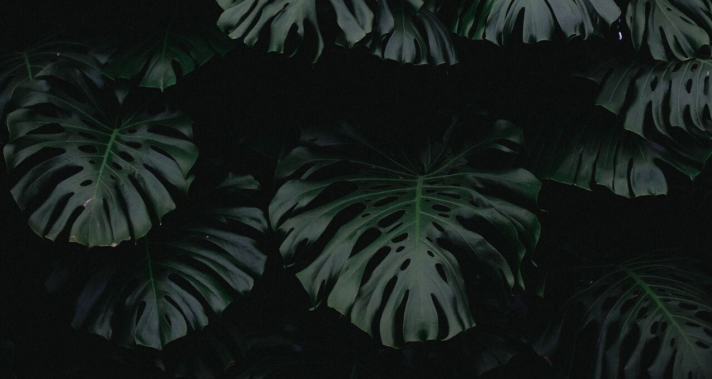
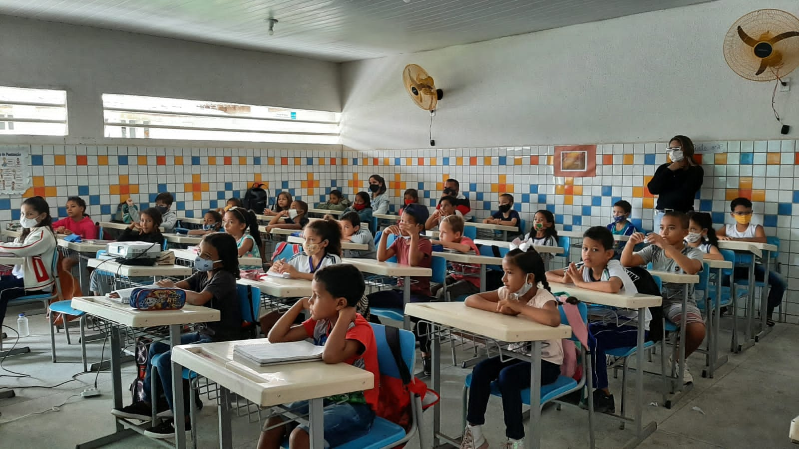
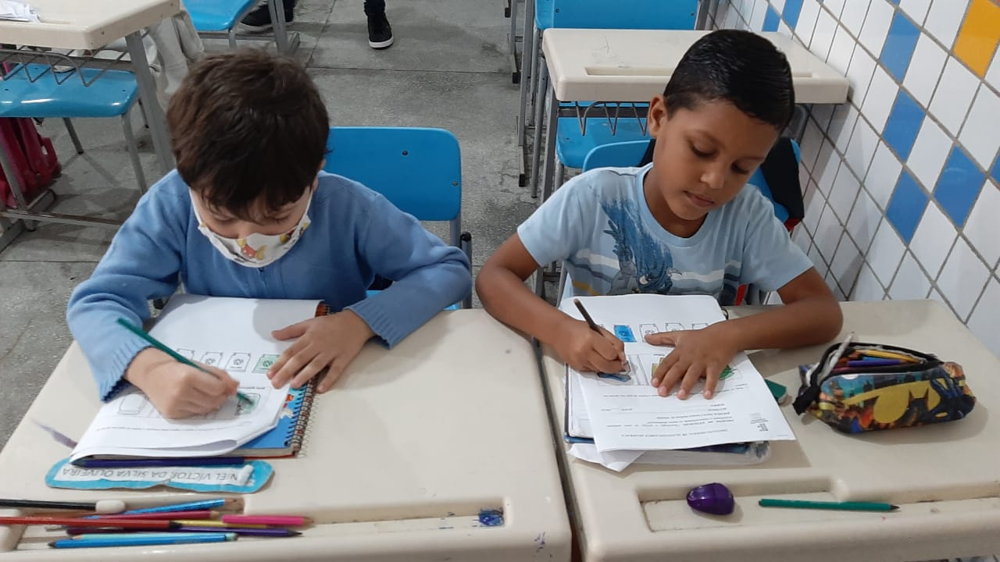
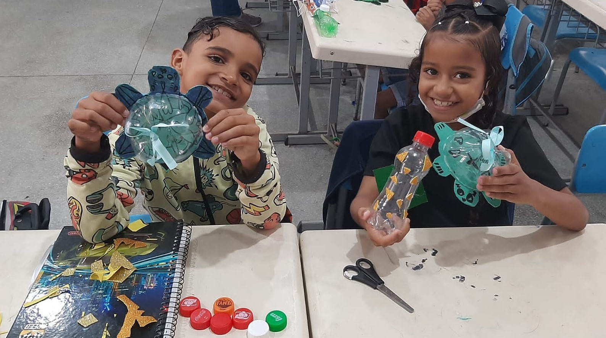
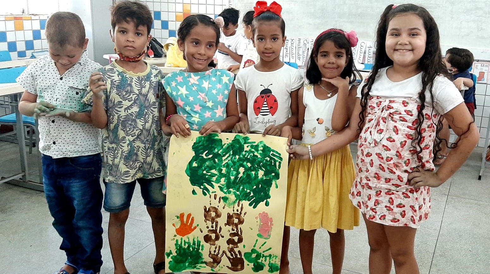
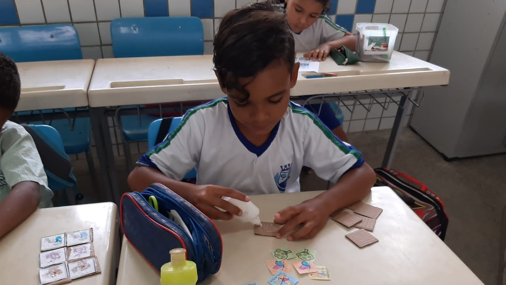
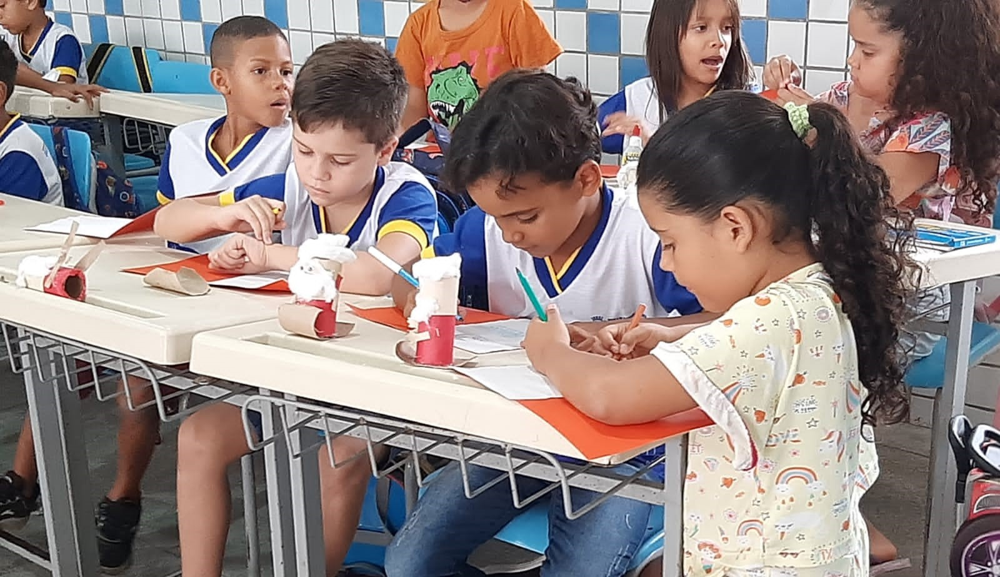
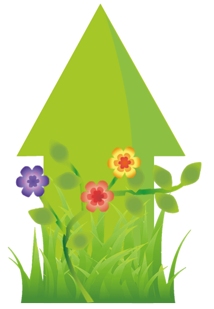

Página Inicial
Sobre
Oficinas
Tutoriais
Observe aqui as oficinas trabalhadas durante o projeto!....

Primeira oficina!
Palestra discutindo os conceitos básicos de sustentabiliade

Segunda oficina!
Atividade de colorir para debater as cores corretas das lixeiras

Terceira oficina!
Confecção de tartarugas e foguetes de garrafa PET

Quarta oficina!
Confecção de cartazes do dia da árvore e porcos-espinhos de papelão

Quinta oficina!
Jogo da memória e jogo da velha de papelão
Sexta oficina!
Atividade sobre a importância do folclore para o meio ambiente

Sétima oficina!
Confecção de papai noel com coisas ricicláveis e cartões de conclusão do projeto
Oitava oficina!
Visita técnica ao 'planetário e casa da ciência de Arapiraca' e fechamento do projeto
